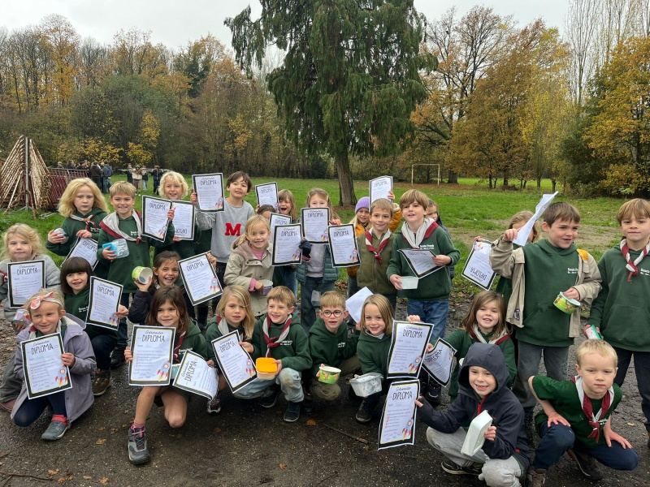
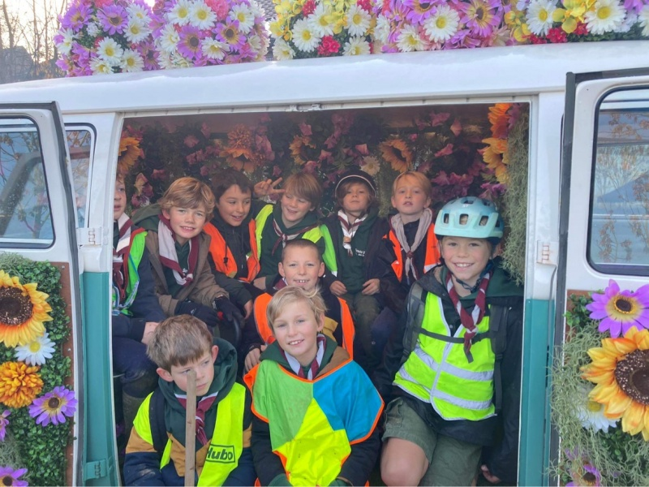
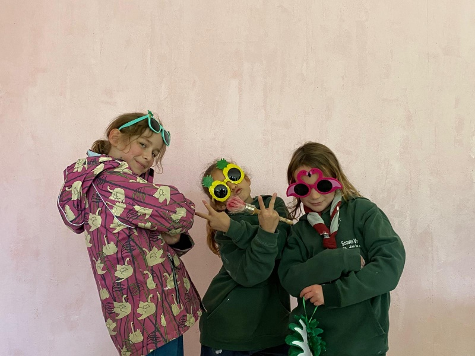
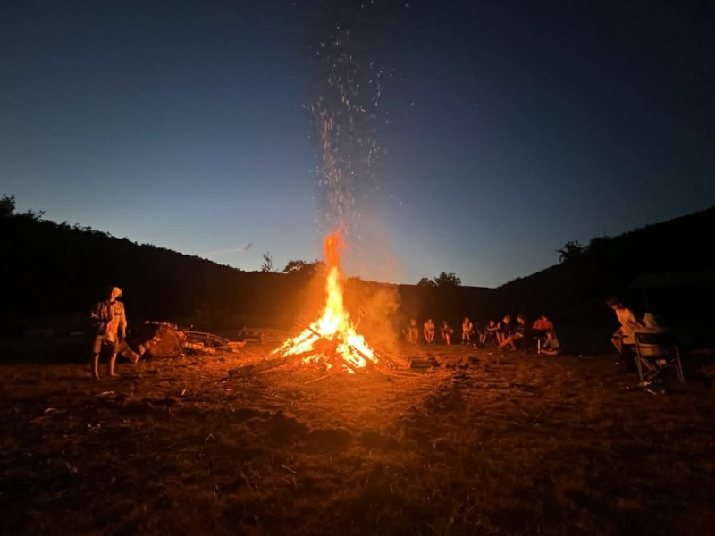
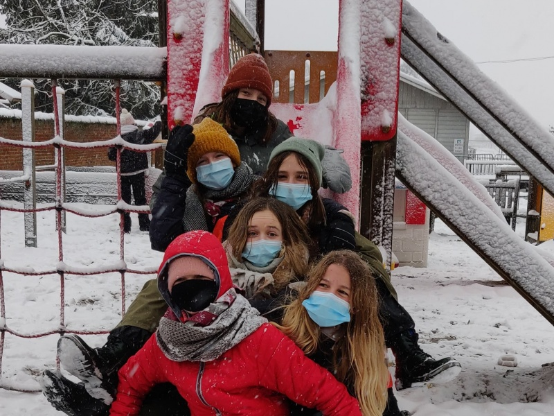
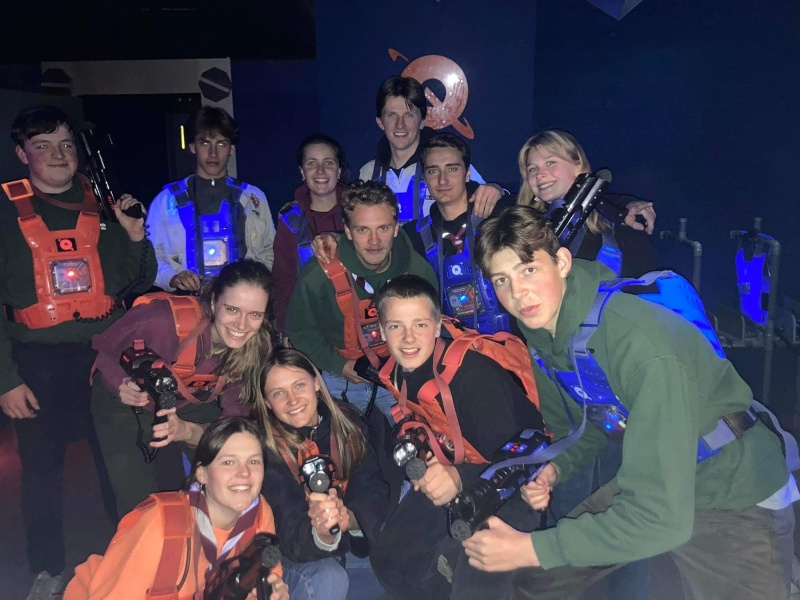
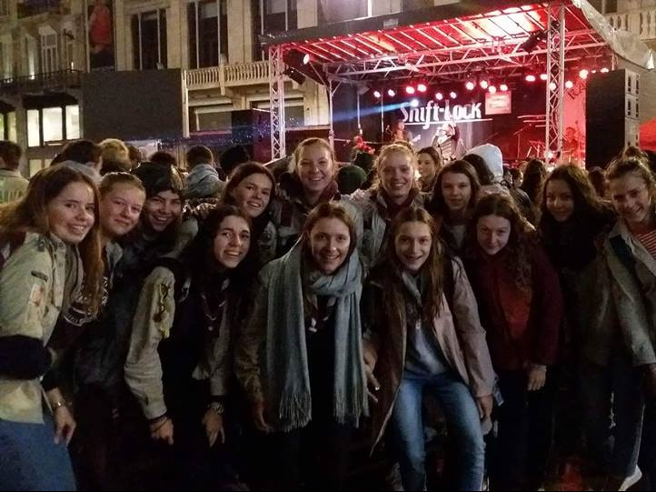
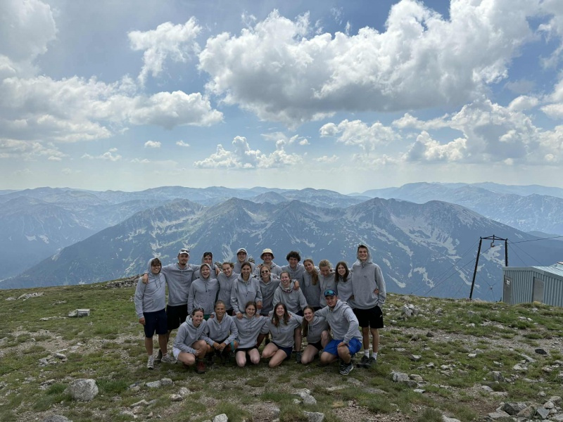
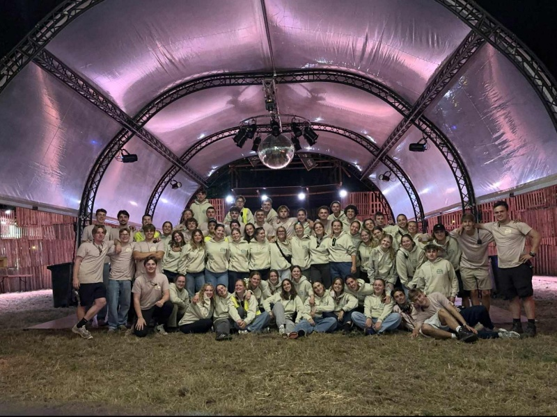

Kies je tak.
Bij Scouts Vremde verdelen we onze leden in groepen op basis van leeftijd en geslacht. Zo bieden we activiteiten aan die perfect passen bij de leefwereld van elk kind.

Kapoenen
Scouting is voor de allerkleinsten een groot spel. Ontdekken, samenwerken en plezier.

Welpen
Echte scoutingtechnieken leren verpakt in spannende thema-middagen voor stoere jongens.

Kabouters
Magische avonturen voor meisjes. Spelletjes, knutselen en bosbeleving staan centraal.

Jong-Verkenners
Fysieke uitdagingen, tweedaagses en koken op houtvuur voor avontuurlijke jongens.

Jong-Gidsen
Hechte vriendschappen smeden door samen grenzen te verleggen in de natuur.

Verkenners
Zelfstandigheid en grote projecten. Verkenners plannen hun eigen kamp en expedities.

Gidsen
Maatschappelijk engagement en vriendschap. Een groep die haar eigen koers vaart.

Jins
Het laatste jaar. Samen werken voor een droomreis en voorbereiden op leiding worden.

Leiding
Wat drijft een twintigjarige om wekelijks leiding te geven? Meer dan je denkt.